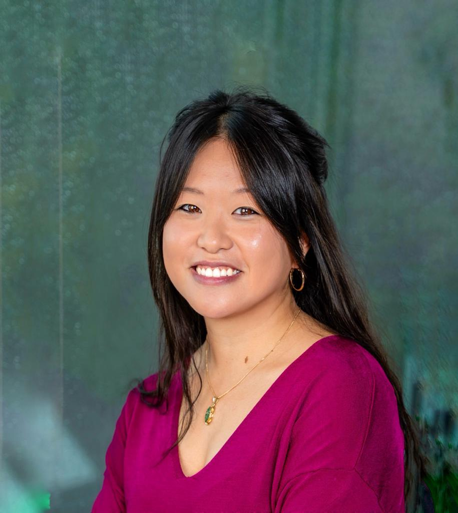
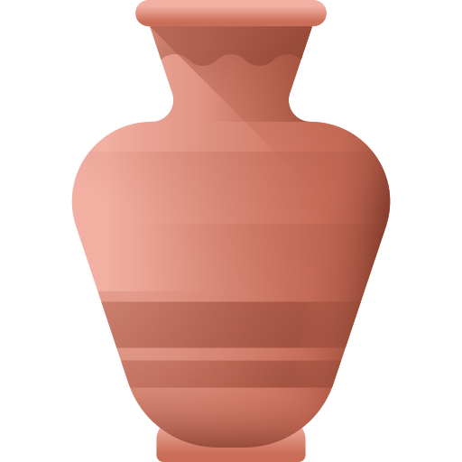
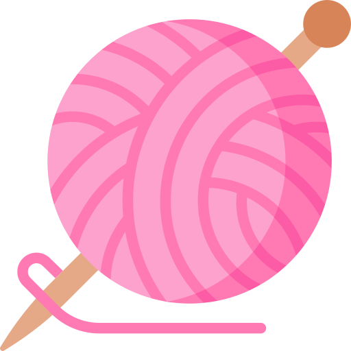

Adia Lumadjeng
I am a PhD researcher at the University of Amsterdam working on explainable AI, with applications in finance. My research sits at the intersection of machine learning, causal discovery, and mathematical optimisation, spanning linear, convex, and nonlinear programming.
About
Before moving into research, I spent several years as a secondary school mathematics teacher, and it was one of the most formative things I have done. I loved being in the classroom, working with students, and finding ways to make difficult ideas click. That experience continues to shape how I think about communicating complex work clearly, and I carry it with me into everything I do now.
My background spans Mathematics (BSc) and Econometrics (MSc), alongside a degree in Science Education and Communication (MSc), a combination that pulls me toward research that is not only rigorous but genuinely legible.
I am supervised by Ilker Birbil (Amsterdam Business School, UvA) and Erman Acar (ILLC & IvI, UvA), and affiliated with AI4Fintech Amsterdam.
If any of this resonates with you, whether that is interpretability, optimisation, or something in between, I would love to hear from you.
Activities
- Jul 2026 Upcoming: presenting ECSEL at the WiML Symposium at ICML 2026, Seoul.
- Jul 2026 Upcoming: attending ICML 2026 (Seoul, COEX) for the ECSEL paper.
- Jun 2026 Upcoming: attending MLSS NYC 2026 at Columbia University, a two-week summer school covering LLM alignment, interpretability, reasoning, and more.
- Jan 2026 Paper accepted at ICML 2026: ECSEL: Explainable Classification via Signomial Equation Learning.
- Nov 2025 Paper accepted at Computers & Operations Research: Rule Generation for Classification: Scalability, Interpretability, and Fairness.
Personal projects
Outside of research, I am involved in a few creative projects rooted in my hobbies.

KLEILOKAALI manage the Instagram for Kleilokaal, a ceramics studio with nearly 6,000 followers. This covers content strategy, promotion, and capturing the life of the studio.
@kleilokaal
Atomic KnittenMy personal knitting practice and portfolio. I design and make knitwear, and also sell pieces. The Instagram serves as my shop window.
@atomicknitten